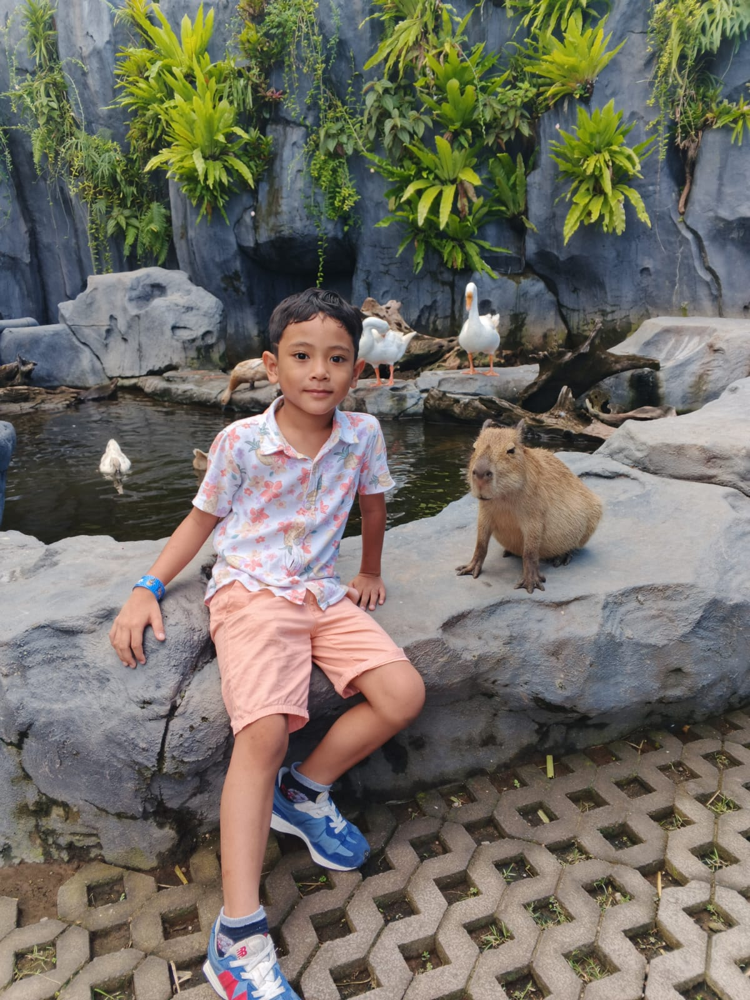

Om Swastyastu
Halo Ayah/Bunda Kelas 2 D, semoga sehat selalu ya! 😊 Kami ingin mengundang Anak - Anak untuk ikut hadir memeriahkan acara ulang tahun ke-8 anak kami, Beni Satria Pukul 12:00 Wita 28 April 2026


selasa, 28 April 2026
Halo Ayah/Bunda Kelas 2 D, semoga sehat selalu ya! 😊 Kami ingin mengundang Anak - Anak untuk ikut hadir memeriahkan acara ulang tahun ke-8 anak kami, Beni Satria Pukul 12:00 Wita 28 April 2026
